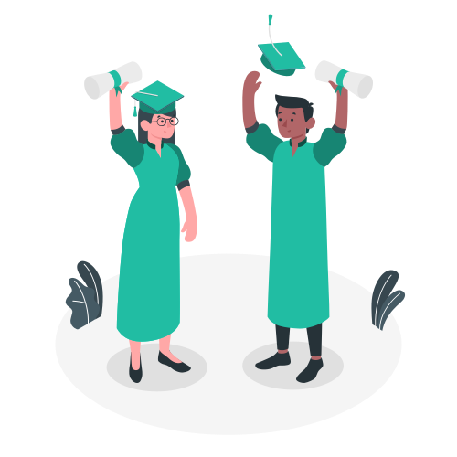

Кто Мы?
-

Мы – кафедра "Медиасистемы и технологии" Харьковского национального университета радиоэлектроники. На протяжении многих лет мы подготавливаем молодых специалистов для издательско-полиграфической отрасли и IT-сферы нашей страны.
В процессе всего обучения наши студенты получают профессиональные знания не только в области печатных технологий, но и подробно изучают технологии разработки электронных, мультимедийных изданий, информационных продуктов, WEB-систем (включая проектирование UI/UX), мобильных приложений с возможностями анимации и многое другое.
На 3-м курсе студенты проходят основные этапы разработки адаптивного web-ресурса и создают свой курсовой проект, примером которого является этот сайт. Это дает возможность попробовать себя в роли как веб-дизайнера, так и верстальщика.
Более подробно о кафедре Вы можете узнать на нашем сайте, на страницах которого Вы найдете важную и полезную информацию для абитуриентов, о наших партнерах, международном сотрудничестве и многое другое.